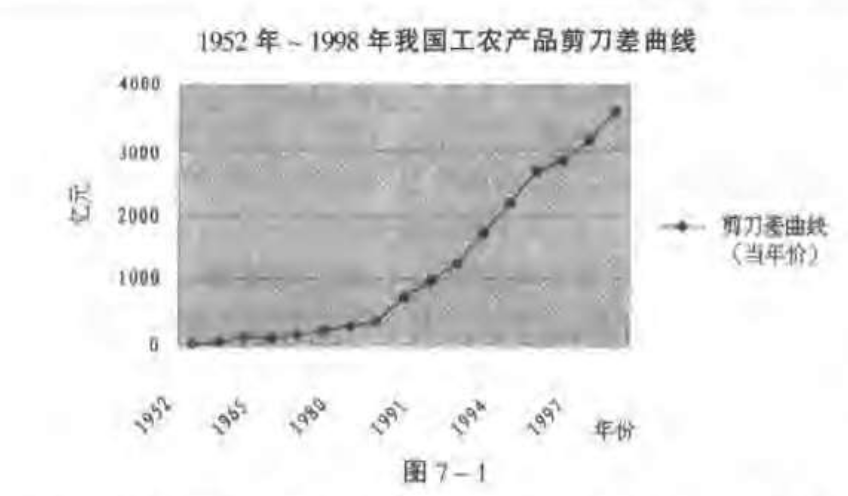
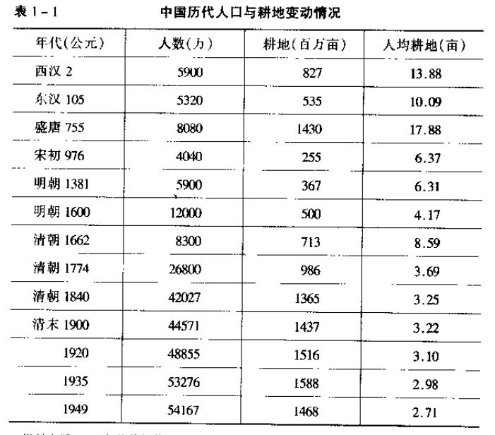
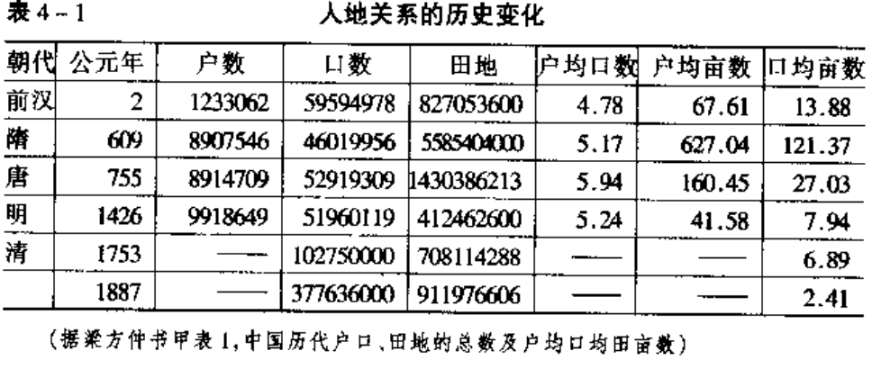

中国农村基本经济制度研究
————三农问题世纪反思
温铁军
- 百年农村基本经济制度变迁的实质：以农民为主体，以“平均地权"为内容
- 新中国三次土地制度变革：
- 1949～1952：土改
- 1978～1984：大包干
- 1997～1999：30年不变延包政策
- 我国农村的任何制度安排都不过是宏观环境制约和要素结构变化的结果
- 读书易而实践难
- 农民在满足温饱之后转向追求农业外部的现金收入最大化
- 西方是以个体为基因的社会，东方是以集体为基因的社会
- 中国工业化原始积累：多数年份30%～40%的积累率
- 中国的问题是：一个资源禀赋较差的发展中的农民国家，通过内向型自我积累追求被西方主导的工业化的发展问题
1. 理论分析
- 中央政府和城市利益群体从已经初步完成国家工业化的角度强调可持续发挥的后现代问题
- 而各类地方政府则急于进入工业化而主要解决前现代问题
- “小农村社经济”
- 农地对农民主要体现在社会保障的功能上
- 新古典主义经济学-》新制度经济学-》发展经济学
- 发展劳动密集型产业，促进城市化进程，解决农村人口和劳动力过剩的问题，中国农业才能从根本上避免衰败，小农户才能不至于破产，国家才能保持稳定
- 19世纪中期，太平天国等农民起义造成数千万人口减少（为总人口的20%～30%）。
- 中国农村承受不起两极分化的制度成本---- 人地关系高度 紧张的基本国情
- 建国之前的三次土地革命战争，农民牺牲了约3000万人
- 在农村经济之外已经树立起来一个产业门类齐全，专业分工社会化的庞大城市工业
- 分户经营并没有解决农业劳动生产率低的问题
2.农村制度变迁的外部制度环境问题
- 城乡关系
- 国际低价粮食和国内粮食价格波动
- 1999年4月10日：《中美农业合作协议》签字，中国在农产品贸易上做出让步。主要是谷物，柑橘，肉类
- 中国应在金融保险等战略产业以及其他维持部门垄断地领域先向国人开放。
- 加快农业过剩劳动力的转移和农业人口的城市化进程
- 政府利用土地产权不清晰的制度缺陷“以地生财”
- 具体问题：农村产权制度不完善；就业、医疗、养老不承担
- 乡镇企业的真正价值并不是创造工业产值，而是创造就业机会{农业如何获得反哺}
- 乡镇企业比国企竞争力强的原因：利润中包含了社区土地和社会保障转移收益
3.农村基本经济制度试验研究
- 土地股份制；
- 平度经验：口粮田+种粮大户{同样是粮猪型农户经济}
- 农业的投入和产出两头都长期受到垄断控制
- 开放后：粮食，畜牧，蔬菜和果品放开。粮食棉花烟草却越统越死
- 城乡二元结构调整：以劳动密集就业于国家主导的基础设施建设为第一国策
- 全面开通城乡，实现农业过剩人口，非农转移
- 加强农村内部制度建设，打破流通和金融垄断
第二部分：旧中国的农村基本经济制度问题
- 以土地占有和分配关系为主的制度变迁是其他一切农村经济制度形成与发展的基础
- 近代中国农业和农村经济的衰败主要原因不是农业自身的问题；
- 国家税收，金融和工商业资本都是小农经济的主要剥夺者
4.内生性的制度安排“两田制”和“两权分离”
- “公田”与“私田”
- 土地占有权逐渐分散，而使用权向自耕农相对集中
- 土地占有上的不平等很可能不是旧中国农村贫困，小农破产的主要原因
- 清初：开疆拓土，移民实边。新增人丁，永不加赋。
- 地主和农民大约各占一半土地的建国后的调查结论
- 土地所有权与使用权的分离并非大包干以后才出现
- 因为战争需要，所以投资军工，增加赋税，赤字，外债，增加对各个阶层的剥夺
- 到抗战时，四川的田赋已经预征到1987年
- 只有“劣绅”能够完成政府赋税的同时中报私囊
- 利用税收调节不同利益集团的分配关系是一种现代政府行为
5. 旧中国农业的商品化与相关制度问题
- 旧中国农民革命的本质原因是工商业资本和金融资本对农村的过量剥夺
- 历史是螺旋式反复的
- 真正造成农民贫困和农业破产的主要因素：工商业资本的“剪刀差”和金融资本的高利贷
- 洋务运动以后以轻纺，食品为主的民族工业兴起
- 主要经济作物种植：茶，丝，棉，糖，花生和大豆。
- 抗战开始后，国民政府实行统购统销；三大出口专业公司：复兴商业，富华贸易和中国茶叶；食盐、糖、烟、和火柴、酒、茶实行专卖。花，纱，布统购统销。
- 1933年各地农村中借款的家数达到56%，借粮的家数也达到58%
- 民国产生高利贷的背景： 以维护官僚资本垄断利益为主的政府没有在农村建立适应小农经济的金融工具
- 高利贷的放贷者主要是地主、富农和商人，银行，商店
- 20世纪30年代，中国的工业化进程在帝国主义买办、政府官僚资本和 民族工商业资本共同作用下明显加快
- 大多数农民借贷都主要是为了应付生活急需，而不是为了扩大再生产
- 旧中国工业化进程中，工商业资本原始积累是以牺牲农业和小农破产、社会矛盾激化为代价的。
- 中国的农民革命主要起因于我们这个发展中国家追求工业化所必须的资本原始积累{太平天国的解释？}
第三部分：从合作化、集体化到村社集体经济
- 50～70年代中央政府主办的国家工业化对全国城乡进行资本原始积累
- 马克思主义的基本原则：生产工具的改变决定生产力的水平、进而生产关系，那末集体化不等于社会主义
- 科学研究的一般方法沿着前人研究的一般路线重复实验如果不能得出同样的结果，则前人的结论被证伪
- 任何制度都有成本和收益
6. 农村集体制度形成的原因
- 中国的国家工业化原始积累除了让农民做出牺牲之外没有其他选择
- 土改是新中国立国的基础，是伟大的政治革命；土改的政治意义大于经济意义
- 合作化的组织能够弱化，抑制农民反抗；{统购统销+合作化}
- Mao：“我们这么多年不知道搞得到底是什么？实际上搞得是国家资本主义”
- 我们的历史把这种制度造成的损失称为“三年自然灾害”
- deng：群众愿意采取哪种形式就采取哪种形式，不合法的使它合法起来
- 高度集体化在中国农村只推行了不到五年（1958～1962）
- 据统计，每亿元投资轻工业可吸收1.8万人就业，而重工业吸收6000人就业。
- 城乡二元结构；“人地关系紧张”
- 后来者在享受工业化带来的现代物质生活的同时，往往会略显尴尬
- 倒出脏水，泼掉孩子
- 黄宗智：过密化{通过增加劳动力增加产量，劳动力的平均收入降低}
- 林毅夫：监督成本{劳动者多劳动，既不增加当前收入，也不增加预期收入他是不会有劳动积极性的，除非有人监督他，监督是有成本的}
- 农民得到的农业剩余太少，因此生产的主要目的不是为了增加收入，而是为了维持生活
- 人均收入的下降事实上进一步导致平均倾向
- 自留地的单位产量一般比集体土地的产量高30% ～50%
第四部分：大包干以来的制度创新
- 家庭承包制，不仅是生产经营方式的变革，更重要的是财产关系的变革。
9.以土地产权为核心的农村财产制度
- 具有生产和福利这两重性的土地制度，是农村基本经济制度的基础
- 从国家制度看，土地制度是一切大陆法系的立法基础
- 由于农户土地规模细小分散，农业剩余太少，历朝历代的统治者都试图维持“轻徭薄赋”近代则强调减租减息和减轻农民负担
- “家庭联产承包责任制”到“家庭承包制{大包干}”
- 土地承包权作股产生社区股份合作制
- 规模经营单位土地要素增加的同时资本要素也在增加。
- 实验：
- 划分口粮田和责任田
- 增人不增地，减人不减地
- 适度规模经营
- 土地流转
- 山地制度：长期租佃制代替承包制
- “四荒”地拍卖
- 社区股份合作制
- 制度建设是一项长期任务
- 多样化的农村经济主体发展---农业产业化
- 土地约占农村财产总额的85%
- 小农村社经济兼业化和专业化长期并存
- 农户越来越多的投向住宅和货币储存
- 农户收入低，投入低的内在制约因素主要是 土地规模有限
- 土地对农民的生存保障功能重于生产功能
- 20世纪30年代随工业化曾经发生过的农业衰败也可能会再次出现
- “农林牧副鱼，工商建运服”十业并举
- 我国农业面临市场条件下资源流出和工业化进程中农业剩余提取的双重压迫
- 合作社经济的本质，就是劳动者的劳动的联合{按劳分配，资本报酬有限是基本原则）
- 一切制度安排都不过是宏观环境制约的结果
- 农业困境：劳动力绝对过剩，资本绝对稀缺，土地。。。
- 民主办社，民主理财
- 村社企合一，一套人马几块牌子
- 分散弱小的农村户营经济都必然被集中庞大的城市垄断资本所剥夺
11.农村基层的税费分配制度
- 切不可在相关的制度环境没有改变的情况下，单纯进行税费制度改革
- “揪着头发离开地球”播下龙种，收获跳瘙
- 解放前除了国防外交之外，国家对农村社会不提供公共品
- 政府与分担农民无法交易：税都不能挨家收
- 现代财政体制刺激了地方政府资本积累的欲望



问题与想法
- 小农经济抑制土地集中，因此无法适应殖民地占有形式的扩张型资本主义经济
- 越是大城市，粮食的消耗越低
- 文革没耽误种地？yes
- 中国的村乡县数量？
- 34个省
- 333个地区
- 2844个县
- 4,1636个乡
- 69,1510个村
- 如何在虚拟经济的汪洋大海中游泳？
- 三大市场：能源、材料、粮食。
- 成本计算中：过度丰富的要素是不计价的，
- 发生猪瘟 的第一反应不应该是治疗吗？难道是杀光？
详细内容看原书
《墨经 大取篇》
宋 墨翟
- 天之爱人也，薄于圣人之爱人也；其利人也，厚于圣人之利人也[人与人，人与物之间的关系]
- 于所体之中，而权轻重之谓权。权，非为是也，非非为非也，权，正也。断指以存腕，利之中取大，害之中取小也。害之中取小也，非取害也，取利也。其所取者，人之所执也
- 杀一人以存天下，非杀一人以利天下也；杀己以存天下，是杀己以利天下
- 于事为之中而权轻重之谓求。求为之，非也。害之中取小，求为义，非为义也
- 利之中取大，非不得已也。害之中取小，不得已也
- 所未有而取焉，是利之中取大也。于所既有而弃焉，是害之中取小也
- 爱人不外已，已在所爱之中。已在所爱，爱加于已
- 亲厚，厚；亲薄，薄
- 圣人恶疾病，不恶危难
- 义，利；不义，害。志功为辩
- 天下无人，子墨子之言也犹在
- 凡学爱人。小圜之圜，与大圜之圜同
- 利人也，为其人也；富人，非为其人也
- 虽其一人之盗，苟不智其所在，尽恶，其弱也{因为这群人里面有盗贼而厌恶整群人，是“弱”}
- 诸圣人所先，为人欲名实。名实不必名； {最重要的是名字逻辑与现实经验逻辑相符}
- 子深其深，浅其浅，益其益，尊其尊
- 智与意异 {认识和现实存在差异}
- 有其异也，为其同也，为其同也异
- 匹夫辞恶者，人有以其情得焉。诸所遭执，而欲恶生者，人不必以其请得焉 {理论偏见形成即根深蒂固}
- 仁而无利爱。利爱生于虑
- 昔者之虑也，非今日之虑也。昔者之爱人也，非今之爱人也。昔之知啬，非今日之知啬也
- 去其爱而天下利，弗能去也{囚徒困境}
- 长人之异，短人之同，其貌同者也，故同。
- 诸非以举量数命者，败之尽是也。
- 故一人指，非一人也；是一人之指，乃是一人也。
- 以故生，以理长，以类行也者
- 立辞而不明于其所生，妄也。今人非道无所行，唯有强股肱而不明于道，其困也，可立而待也
- 圣人也，为天下也，其类在于追迷
- 小仁与大仁，行厚相若，其类在申
- 凡兴利除害也，其类在漏雍 {堵住漏洞是为了更长久的活下去；加水是让更多人喝；殊途同归}
- “不为己”之可学也，其类在猎走
- 爱人之亲，若爱其亲，其类在官苟。兼爱相若，一爱相若。一爱相若，其类在死也
《墨经 小取篇》
- 夫辩者，将以明是非之分，审治乱之纪，明同异之处，察名实之理，处利害，决嫌疑。焉摹略万物之然，论求群言之比。以名举实，以辞抒意，以说出故。以类取，以类予。有诸己不非诸人，无诸己不求诸人
- 或也者，不尽也。
- 假者，今不然也。
- 效者，为之法也，所效者，所以为之法也
- 辟也者，举也物而以明之也
- 侔也者，比辞而俱行也
- 援也者，曰：“子然，我奚独不可以然也？
- 推也者，以其所不取之同于其所取者，予之也。“是犹谓”也者，同也。“吾岂谓”也者，异也。
- 是故辟、侔、援、推之辞，行而异，转而危，远而失，流而离本，则不可不审也，不可常用也。
- 故言多方殊类异故，则不可偏观也。{方面，特殊，类别，差异，因果}
- 此与彼同类，世有彼而不自非也，墨者有此而非之，无也故焉，所谓内胶外闭与心毋空乎？内胶而不解也。此乃是而不然者也
- 马或白者，二马而或白也，非一马而或白。此乃一是而一非者也
- 之马之目盼则为之马盼；之马之目大，而不谓之马大。{对立面思考；盼：小眼？}
- 之牛之毛黄，则谓之牛黄；之牛之毛众，而不谓之牛众 {不合理缩略，抽象}
- 一马，马也；二马，马也 {数量增加性质不变}
- 乘马，不待周乘马然后为乘马也；有乘于马，因为乘马矣。逮至不乘马，待周不乘马而后不乘马。此一周而一不周者也{肯定一个，否定全部}